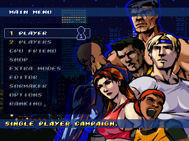

MAIN MENU

1 PLAYER
Story mode for 1 player.
If the " PRESS 2P START " sign appears on the screen a second player can join in
MENÚ PRINCIPAL
1 JUGADOR
Modo historia para 1 jugador.
Si aparece el letrero " PRESS 2P START " podrá entrar un segundo jugador
5